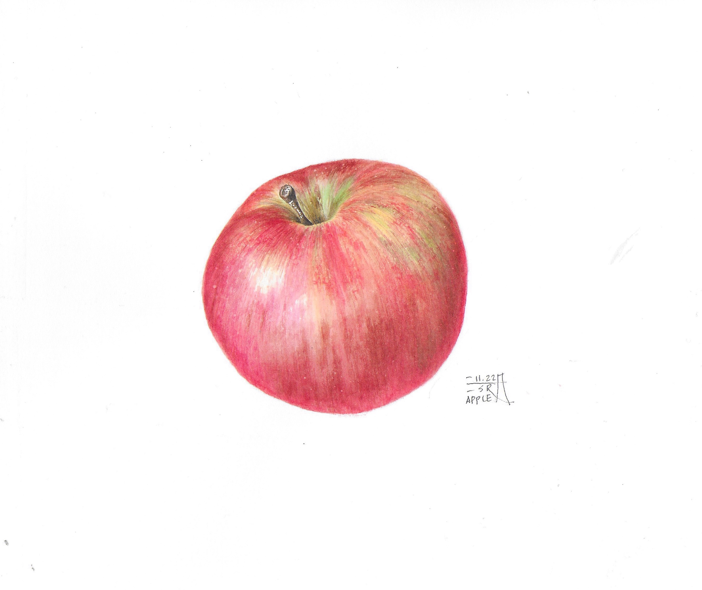
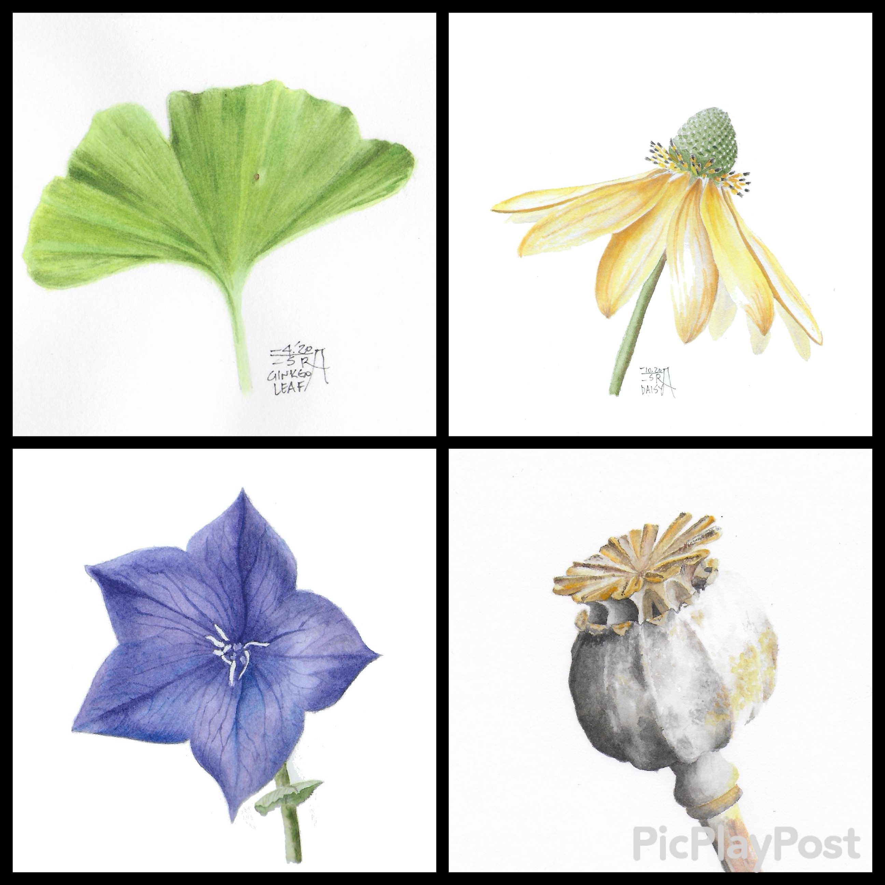
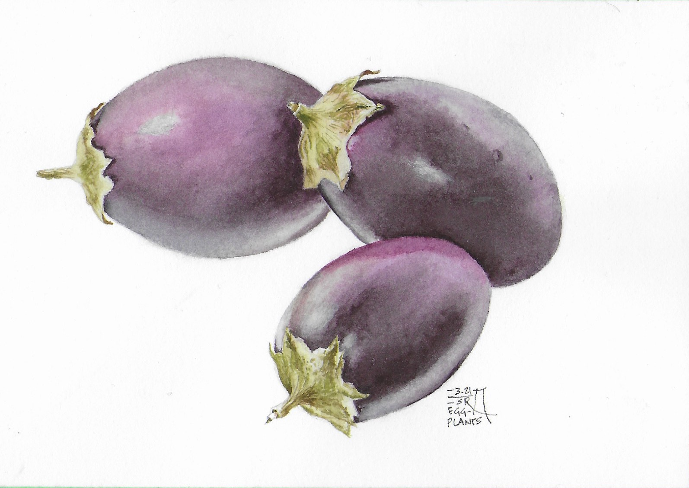
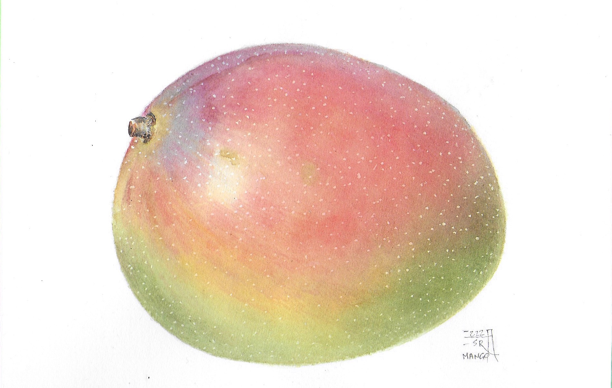

"Without craftsmanship, inspiration is a mere reed shaken in the wind." — Johannes Brahms
Watercolour Fundamentals: Discover Botanicals!
If you have an interest in nature, particularly plants, and you're an artist who pays attention to intricate details, then Botanical Illustration is the perfect fit for you. This course aims to provide a comprehensive understanding of watercolour techniques specifically tailored for botanical artists. It serves as a step-by-step guide, allowing you to create delicate artwork in a relaxed and enjoyable atmosphere.
The Objective
The course is designed to teach the fundamental watercolour techniques in a systematic
manner, catering to those who are absolute beginners in watercolour painting. The
lessons will include both theoretical instruction and exercises to familiarize you with
the common watercolour terminology. You don't need to be a botanical illustrator or
someone skilled in detailed drawing. Art concepts will be explained in each session,
making it accessible to all participants.
Every session will have a specific theme that encourages artistic development. The aim will be completing a small artwork that aligns with the objectives of the lesson. We will start with monochrome painting, delving into concepts like value, basic wash techniques, colour theory, and strategies for painting. Topics such as shape, colour, and technique simultaneously, ensuring an engaging and enjoyable learning experience will also be covered. Rest assured, we'll have a lot of fun along the way!

Botanical Illustration with Watercolour – Intermediate Level
To further enhance your skills, it is crucial to continue practicing and honing your abilities. This course serves as a natural progression from the fundamentals course, building upon your existing knowledge and transforming it into a comprehensive skill set.
In this intermediate level course, we will delve deeper into various subjects, exploring the more challenging aspects of botanical illustration. Some of the topics we will cover include structural drawing, where we focus on capturing the intricate details and forms of plant anatomy. We will also explore transparent drawing, mastering the technique of rendering transparency in botanical subjects.
Additionally, we will discuss the nuances of working with whites and low tones, allowing you to effectively portray light and shadow within your artwork. Dark subjects will also be explored, providing you with the tools and techniques to accurately represent darker plant specimens. Furthermore, we will explore the vast range of greens and learn how to create visual diversity within this colour palette.
By the end of this course, you will have expanded your knowledge and refined your skills, enabling you to create more intricate and visually captivating botanical illustrations. Join us on this artistic journey as we explore the depths of botanical illustration with watercolour at an intermediate level.

"I'm drawing a great deal and think it's getting better." — Vincent van Gogh, Etten, November 3, 1881, to Theo van Gogh
Botanical Illustration with Watercolour – Mini Projects
Now that you have acquired a solid understanding of the concepts and language of botanical illustration and watercolour, it's time to showcase your skills through creating your very own masterpieces.
In this series of projects, we will focus on specific topics and specimens, allowing you to further develop your artistic abilities. You will be encouraged to create your own drawings based on the given subjects and then bring them to life with watercolour, following the expectations set for each project.
Our selection of specimens will span a wide range, from aromatic basils to delicate trout lilies. Each project will offer a unique opportunity to refine your techniques and explore the intricacies of different plant species.
By engaging in these projects, you will have the chance to apply your knowledge and skills to create stunning botanical illustrations using watercolour. Let your creativity blossom as we embark on this artistic journey together, discovering the beauty and diversity of plant life.
To assist you in this process, we have prepared video recordings that showcase the subjects in detail. These recordings can be accessed at your convenience, allowing you to view and study them at your own pace throughout the week.
"Creativity is like diamond. It happens under high temperature and pressure"

Testimonials
Excellent – methodical, organized with content of one flowing into the next. Content excellent with appropriate samples to demonstrate the underlying principle trying to be achieved for the specific lesson.
MaryAmazing teacher and her critique is invaluable. Encouraging to students no matter their level. Transmits love and passion for botanical art to her students. Thank you Esra! I will miss Thursday's meeting.
MarinaHighly recommended! Esra's watercolour classes are always well-organized, visually appealing, designed to inspire and bring out the best in her students. Esra loves to challenge her students and provides them with the tools they need to succeed: A clear and well-developed course outline; weekly mailouts detailing class material and upcoming assignments; online classes with informal lectures, colour-mixing and painting demonstrations, supportive reviews of student work. Questions and discussion are encouraged and laughter is plentiful. Who could ask for more?
KrisEsra is a gifted artist and an exceptional teacher. I was lucky enough to take 2 sessions with Esra in person and one 8 week session online. I was amazed by the organization and quality of activities that she provided. Each lesson included valuable exercises to teach accurate drawing, colour mixing, and then to build on these skills, a final project to complete which reinforced these new skills. Esra provided valuable and thoughtful feedback and her live demonstrations in person and online were very helpful. I was lucky to join Esra's classes as a new botanical art student and I was incredibly happy with all that I learned. I would highly recommend her classes!
Kim xo"Esra Ozgun is an excellent teacher. Her 8 week watercolour course is well thought out with challenging projects that build on the concepts discussed each week. Critiques are honest in their criticism but full of encouragement and advice at the same time. I learned a lot in a very pleasant atmosphere and would happily take another course from Esra."
NancyIt is a pleasure to practise watercolour under your guidance. I have appreciated your teaching method from the start but you are knocking it out of the park now. It is obvious that you spend a great deal of thought and time to plan your classes and perhaps I could say that it shows in the improvement in my painting. 'Esra's lesson plans are guaranteed to help you improve your skills whatever your level'. This was a wonderful set of lessons and I learned an incredible amount. Thanks so much.
GillianThank you Esra for being such a dedicated and inspirational instructor. Your botanical art classes were well organized, structured and designed so that we could apply what we learned in previous classes. You made botanical art fascinating and worth pursuing. I have learned so much from you, kindest regards, Hélène.
HélèneI highly recommend this course for anyone. The teacher Esra takes you from the first steps to the final details in her logical and intriguing teaching methods. Her demonstrations are excellent and Esra shows us how to improve the new technique or has a new way for us to look at the subject. Her course material is excellent. Every week she had new projects for us to work on at home. Making it easier for us to get straight to painting. At the end of the course I understood so much more than when I went in. I will take another course even if it is completely repeated. I will gain knowledge from this gifted teacher. And amazing artist! Also I have a journal of this course showing the lesson and my result. Very inspiring and happy to have this book of my progress. Thanks to the OSA for offering this course. Part of the fun was venturing to the Ottawa market once a week.
Valerie